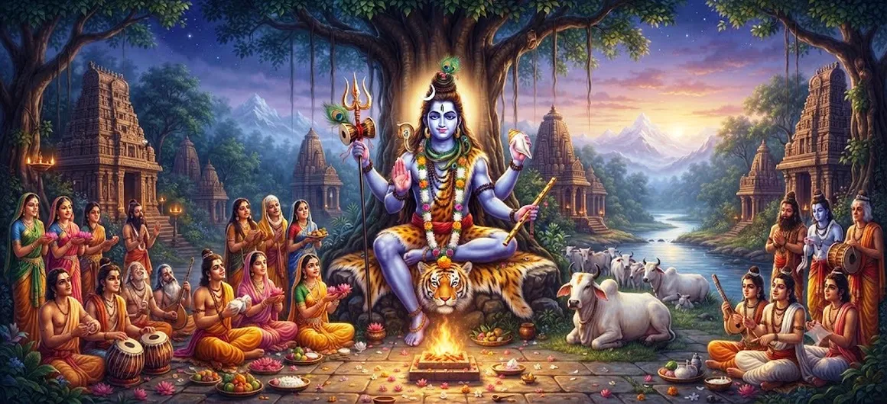

Shiva's Incarnation as Krishnadarshana
Chapter 29 of the Shatarudra Samhita narrates the sacred manifestation of Lord Shiva as Krishnadarshana, a divine form through whom Nabhaga receives perfect knowledge. The narrative brings together truthfulness, sacrifice, humility, divine testing, and the compassionate grace of Mahadeva.
Nabhaga had spent a long period studying with his preceptors while his brothers divided the family property without leaving him a share. His father directed him toward a sacrifice being performed by the Angirasa Brahmins, where Nabhaga's service and recitation helped bring the ritual to completion.
At the conclusion of the sacrifice, Lord Shiva appeared suddenly as the beautiful and glorious Purusha Krishnadarshana. Through a seemingly simple question concerning the sacrificial remainder, Shiva tested Nabhaga's understanding and prepared to bestow the highest spiritual knowledge upon him.
Chapter 29 Highlights
The Story of Nabhaga
Nabhaga returns from his studies to discover that his brothers have divided the family inheritance without giving him a share.
The Sacred Sacrifice
Nabhaga assists the Angirasa Brahmins in completing their sacrifice through devotion and the recitation of Vaiśvadeva hymns.
Krishnadarshana Appears
Lord Shiva manifests as the glorious Purusha Krishnadarshana and approaches Nabhaga after the sacrifice.
The Divine Test
Shiva questions Nabhaga's right to the sacrificial remainder, testing his truthfulness and understanding.
Humility and Surrender
Nabhaga accepts his father's guidance, recognizes Shiva, and approaches the Lord with humility.
Perfect Knowledge
Pleased with Nabhaga's truthfulness, Shiva grants him perfect knowledge and blesses him with prosperity.
Core Topics in This Chapter
- 01 Nabhaga and His Family →
- 02 The Loss of Nabhaga's Share →
- 03 Guidance from His Father →
- 04 The Sacred Sacrifice of the Angirasa Brahmins →
- 05 The Appearance of Krishnadarshana →
- 06 The Divine Test of Nabhaga →
- 07 Manu Reveals the Truth →
- 08 Nabhaga's Humility and Surrender →
- 09 The Gift of Perfect Knowledge →
- 10 The Blessing of Krishnadarshana →
Nabhaga and His Family
Nabhaga was one of the sons of Manu Shraddhadeva. While he was studying for a long period in the abode of his preceptors, his brothers Ikshvaku and the others divided their shares of the family property and kingdom.
Nabhaga remained devoted to his studies and discipline. When his education was complete, he returned home, unaware that his brothers had already taken their respective shares.
His return brought him face to face with a question of inheritance, which became the beginning of a much greater spiritual lesson.
The Loss of Nabhaga's Share
Seeing that his brothers had already divided the property, Nabhaga affectionately asked them to give him his rightful share. They admitted that they had forgotten to allot anything to him.
Instead of giving him property, they told him that their father was his share. Nabhaga was surprised by this response and went to his father to understand the matter.
His father did not allow the apparent injustice to remain unresolved. Instead, he guided Nabhaga toward a righteous means of livelihood and spiritual merit.
Guidance from His Father
Manu explained that the Angirasa Brahmins were performing a sacrifice and that the rites were being interrupted at regular intervals. He instructed Nabhaga to go there and praise the learned Brahmins.
Nabhaga was told to recite two Vaiśvadeva Sūktas. Through this act, the sacrifice would become complete and the Brahmins would grant him the wealth remaining after the ritual.
Nabhaga accepted his father's instruction with faith and immediately went to the place of sacrifice.
The Sacred Sacrifice of the Angirasa Brahmins
Nabhaga reached the sacrifice and faithfully performed the task assigned by his father. During the daily rites, he clearly recited the two Vaiśvadeva hymns.
The sacrifice was successfully completed. The Angirasa Brahmins, pleased with his service, gave Nabhaga the wealth left after the sacrifice.
Nabhaga accepted the gift in accordance with the instructions he had received. At that very moment, however, a remarkable divine event took place.
The Appearance of Krishnadarshana
Lord Shiva manifested Himself suddenly in the form of a beautiful and glorious Purusha named Krishnadarshana. His appearance was not accidental. The Lord had come to observe Nabhaga's response and to bestow perfect knowledge upon him.
Approaching from the north, Krishnadarshana questioned Nabhaga about the wealth he was taking away and asked who had authorized him to take it.
Nabhaga answered honestly. He explained that the sages performing the sacrifice had given the wealth to him and therefore he believed he had the right to take it.
The Divine Test of Nabhaga
Krishnadarshana did not immediately reveal His true identity. Instead, He directed Nabhaga to ask his father about the matter and declared that his father's judgment would settle the dispute.
Nabhaga returned to Manu and described the encounter. Manu immediately understood the divine significance of the event and remembered the lotus feet of Lord Shiva.
The apparent dispute over wealth was therefore revealed as a spiritual test. The Lord was guiding Nabhaga toward a deeper understanding of divine ownership and the sacred nature of sacrifice.
Manu Reveals the Truth
Manu explained that the Purusha who had appeared before Nabhaga was none other than Lord Shiva. He taught his son that the entire universe belongs to the Supreme Lord and that the remainder of a sacrifice is regarded as Shiva's share.
Manu further explained that the Lord had appeared in this form specifically to bless Nabhaga. He urged his son to return immediately, bow before Shiva, ask forgiveness, and praise the Lord of sacrifice.
Manu emphasized that Brahma, Vishnu, the gods, Siddhas, and sages perform their respective functions through the grace and authority of the Supreme Lord.
Nabhaga's Humility and Surrender
Following his father's instructions, Nabhaga returned to Krishnadarshana. With folded hands and bowed head, he approached the Lord in reverence.
Nabhaga acknowledged that his earlier words had been spoken through ignorance. He asked Shiva to forgive him and praised Him as the Lord of sacrifice and the Lord of all things.
Nabhaga's response reveals one of the central virtues of the narrative: when truth becomes clear, genuine wisdom is expressed through humility rather than pride.
The Gift of Perfect Knowledge
Pleased with Nabhaga's truthfulness, Shiva Krishnadarshana declared that Nabhaga had acted virtuously. The Lord recognized that both Nabhaga and his father had spoken truthfully.
Shiva then granted Nabhaga the eternal Brahman and perfect knowledge. The gift was not merely material prosperity but spiritual realization, showing that divine grace can transform an ordinary worldly dispute into a path toward wisdom.
Shiva also blessed Nabhaga with the sacrificial wealth and instructed him to live wisely and enjoy prosperity without abandoning the righteous path.
The Blessing of Krishnadarshana
Having bestowed His grace, Lord Shiva Krishnadarshana disappeared while the assembled beings watched. The gods, Siddhas, sages, and other divine beings bowed to Him with devotion before returning to their respective abodes.
Nabhaga returned home with his father and lived under the blessing of the Lord. The narrative concludes by praising the sacred remembrance and hearing of the story, describing it as beneficial for wisdom, righteous living, and spiritual attainment.
Thus the incarnation of Shiva as Krishnadarshana becomes a profound lesson in truth, humility, sacrifice, divine ownership, and the liberating power of perfect knowledge.
Key Teachings of Chapter 29
Truthfulness
Nabhaga's truthful responses become an important reason for Shiva's satisfaction with him.
Humility
When Nabhaga learns the true identity of Krishnadarshana, he abandons pride and seeks forgiveness.
Sacred Offering
The narrative emphasizes the sacred relationship between sacrifice and the Supreme Lord.
Divine Testing
Shiva's apparent dispute with Nabhaga becomes a test through which deeper understanding is revealed.
Grace and Knowledge
Shiva's ultimate blessing is perfect knowledge, showing that divine grace is greater than material wealth.
Righteous Living
Prosperity is meaningful when it is accompanied by wisdom, righteousness, and devotion.
Spiritual Reflection
The story of Krishnadarshana reminds us that divine lessons do not always appear in dramatic forms. A question about wealth, a disagreement over a sacrificial offering, and a father's simple instruction become instruments of spiritual awakening. Nabhaga's greatest achievement is not the wealth he receives but the perfect knowledge granted by Lord Shiva. His willingness to accept correction, bow before the divine, and abandon personal certainty allows grace to enter his life. The narrative therefore places truthfulness and humility above possession, teaching that worldly circumstances can become sacred opportunities when approached with faith and righteousness.
Living the Message of Chapter 29
The teaching of Nabhaga can be applied by choosing truth even when honesty does not immediately produce personal advantage. His story reminds us that integrity has a value beyond material reward.
When corrected by someone wiser, one can respond with humility rather than defensiveness. Nabhaga's willingness to listen to his father allowed him to recognize the divine reality behind the apparent dispute.
The chapter also encourages devotees to regard every sacred act as an offering to Shiva and to remember that knowledge, wealth, and opportunity become meaningful when used according to dharma.
Key Spiritual Concepts
The divine form of Lord Shiva who appears before Nabhaga and grants him perfect knowledge.
The son of Manu who receives Shiva's grace through truthfulness, devotion, and humility.
The sacred sacrifice around which the central encounter between Nabhaga and Krishnadarshana takes place.
The hymns Nabhaga recites as instructed by his father to help complete the sacrifice.
The supreme spiritual gift bestowed upon Nabhaga by Shiva Krishnadarshana.
The virtue through which Nabhaga accepts correction, seeks forgiveness, and surrenders before Shiva.
Chapter Summary
Shatarudra Samhita Chapter 29 narrates the sacred incarnation of Lord Shiva as Krishnadarshana and the story of Nabhaga. Nabhaga, having spent a long period studying with his preceptors, returns home to discover that his brothers have divided the family property without leaving him a share. His father Manu directs him to assist the Angirasa Brahmins in their sacrifice. By reciting the Vaiśvadeva Sūktas, Nabhaga helps complete the sacrifice and receives the wealth left afterward. Shiva then appears as the glorious Purusha Krishnadarshana and questions Nabhaga about his right to the wealth. Following his father's guidance, Nabhaga recognizes the divine Lord of sacrifice, approaches Him with humility, and asks forgiveness. Pleased with Nabhaga's truthfulness and virtue, Shiva grants him perfect knowledge and blesses him with the sacrificial wealth. The chapter teaches that truth, humility, devotion, and reverence for the Supreme Lord lead beyond material concerns toward divine wisdom.
Frequently Asked Questions
① Who is Krishnadarshana in Shatarudra Samhita Chapter 29?
Krishnadarshana is the divine manifestation of Lord Shiva who appears before Nabhaga after the sacred sacrifice and ultimately grants him perfect knowledge.
② Who was Nabhaga?
Nabhaga was a son of Manu Shraddhadeva. He spent a long period studying with his preceptors while his brothers divided the family property.
③ Why did Shiva appear as Krishnadarshana?
Shiva appeared as Krishnadarshana to test Nabhaga and to bestow perfect knowledge upon him.
④ What was the dispute about the sacrificial wealth?
After the sacrifice, the Angirasa Brahmins gave the remaining wealth to Nabhaga. Shiva then appeared as Krishnadarshana and questioned his right to take it, revealing that the sacrificial remainder belonged to the Lord.
⑤ What blessing did Shiva give Nabhaga?
Shiva granted Nabhaga perfect knowledge and blessed him with the sacrificial wealth, praising his truthfulness and virtue.
⑥ What is the main spiritual lesson of Chapter 29?
The chapter teaches the importance of truthfulness, humility, devotion, obedience to righteous guidance, and recognition of Shiva as the Supreme Lord of sacrifice and all things.
“When truth is joined with humility, divine grace transforms even a worldly question into a path toward perfect knowledge.”
Continue Through Shatarudra Samhita
Chapter 29 reveals Shiva's manifestation as Krishnadarshana and the sacred transformation of Nabhaga through truth, humility, and divine knowledge. Continue to Chapter 30 to explore Shiva's incarnation as Avadhuteshvara.